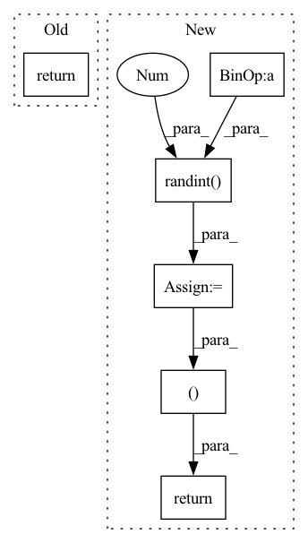

Pattern ID :35698
Before Change
if isinstance(layer, SelfAttentionLayer):
x = layer(x, valid_len, time_step_len)
return x
class SelfAttentionLayer(MessagePassing):After Change
// randomly mask out node features when training
if self.training:
batch_size = x.size()[0]
aux_mask_tensor_idx = [random.randint(0 , time_step_len- 1) for _ in range(batch_size)]
for i in range(batch_size):
x[i, aux_mask_tensor_idx, :] = 0.0
for name, layer in self.layers.named_modules():
if isinstance(layer, SelfAttentionLayer):
x = layer(x, edge_index, valid_lens)
if self.training:
return x, aux_mask_tensor_idx
else:
return x, None
class SelfAttentionLayer(MessagePassing):
In pattern: SUPERPATTERN
Frequency: 4
Non-data size: 6
Instances Fragment ID: 101580303
Project Name: henry1iu/tnt-trajectory-prediction
Commit Name: 253bc487696c7539df73bafb3ff416581b0c2f05
Time: 2021-01-18
Author: jb@pn-204-235.itsc.cuhk.edu.hk
File Name: core/model/layers/global_graph.py
M Class Name: GlobalGraph
N Class Name: GlobalGraph
M Method Name: forward(2)
N Method Name: forward(2)
M Parent Class: nn.Module
N Parent Class: nn.Module
M File Name: core/model/layers/global_graph.py
N File Name: core/model/layers/global_graph.py
M Start Line: 41
M End Line: 47
N Start Line: 41
N End Line: 62
Before Change
bottom // upscale_factor))
hr = hr.crop((left, top, right, bottom))
return lr, hr
def random_rotate(lr: Any, hr: Any, degrees: list) -> [Any, Any]:After Change
// Just need to find the top and left coordinates of the image
hr_top = random.randint(0, hr_image_height - hr_image_size)
hr_left = random.randint(0 , hr_image_width - hr_image_size)
// Define the LR image position
lr_top = hr_top // upscale_factor
lr_left = hr_left // upscale_factor
lr_image_size = hr_image_size // upscale_factor
// Crop image patch
patch_lr_image = lr_image[lr_top:lr_top + lr_image_size, lr_left:lr_left + lr_image_size, ...]
patch_hr_image = hr_image[hr_top:hr_top + hr_image_size, hr_left:hr_left + hr_image_size, ...]
return patch_lr_image, patch_hr_image
def random_rotate(lr_image: np.ndarray, hr_image: np.ndarray, angles: list, lr_center=None, hr_center=None, scale_factor: float = 1.0) -> [np.ndarray, np.ndarray]:
Rotate an image randomly by a specified angle. Fragment ID: 101580312
Project Name: lornatang/fsrcnn-pytorch
Commit Name: 4def63536e213b56d88a9475fb18b8f46d425a09
Time: 2022-02-23
Author: liuchangyu1111@gmail.com
File Name: imgproc.py
M Class Name: AnonimousClass
N Class Name: AnonimousClass
M Method Name: random_crop(4)
N Method Name: random_crop(4)
M Parent Class:
N Parent Class:
M File Name: imgproc.py
N File Name: imgproc.py
M Start Line: 213
M End Line: 238
N Start Line: 385
N End Line: 413
Before Change
bottom // upscale_factor))
hr = hr.crop((left, top, right, bottom))
return lr, hr
def random_rotate(lr: Any, hr: Any, angle: int) -> list[Any, Any]:After Change
// Just need to find the top and left coordinates of the image
hr_top = random.randint(0, hr_image_height - hr_image_size)
hr_left = random.randint(0 , hr_image_width - hr_image_size)
// Define the LR image position
lr_top = hr_top // upscale_factor
lr_left = hr_left // upscale_factor
lr_image_size = hr_image_size // upscale_factor
// Crop image patch
patch_lr_image = lr_image[lr_top:lr_top + lr_image_size, lr_left:lr_left + lr_image_size, ...]
patch_hr_image = hr_image[hr_top:hr_top + hr_image_size, hr_left:hr_left + hr_image_size, ...]
return patch_lr_image, patch_hr_image
def random_rotate(lr_image: np.ndarray, hr_image: np.ndarray, angles: list, lr_center=None, hr_center=None, scale_factor: float = 1.0) -> [np.ndarray, np.ndarray]:
Rotate an image randomly by a specified angle. Fragment ID: 101580328
Project Name: lornatang/espcn-pytorch
Commit Name: 2310c937bc7d6c942e7df614a1e5947888e3cdd2
Time: 2022-02-23
Author: liuchangyu1111@gmail.com
File Name: imgproc.py
M Class Name: AnonimousClass
N Class Name: AnonimousClass
M Method Name: random_crop(4)
N Method Name: random_crop(4)
M Parent Class:
N Parent Class:
M File Name: imgproc.py
N File Name: imgproc.py
M Start Line: 186
M End Line: 208
N Start Line: 385
N End Line: 413